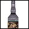
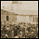
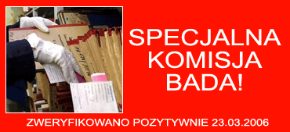
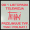
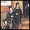
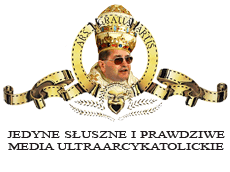

----------------------------------------------------------------------------------------------- |
| |
Zostawcie
po sobie œlad! Jesteœmy ciekawi co myœlicie o zjawisku RM.
Niestety, równie¿ i tutaj zadzia³a S³uszna Cenzura - wpisy
do Ksiêgi linkuj¹ce do pornoli oraz witryn p³atnych bêd¹
kasowane!
|
|
Cenzura
skasuje równie¿ wpisy typu: “3 s³owa do Ojca…”, “Fajna stronka…”,
“Jebaæ moherowe berety…” itp!
wpisz S³owo do Ksiêgi ! |
| ------------------------------------------------------------------------------------------------ |
|
----------------------------------------------------------------------------------------------- |
|
OSTATNIA
AKTUALIZACJA 18.08.2006
|
| |
|
|
¯ydów
kochamy i nie pzwolimy szalej¹cym wœcieklizn¹ mediom szargaæ
dobrego imienia Radia Maryja ! Ojciec
Dyrektor jak Pan Nasz Umi³owany podaje rêkê pojednania a
z³e i ohydne postkomunistyczne media opluwaj¹ œwiêt¹ d³oñ
. |
| ---------------------------------------------------------------------------------------------- |
|
S³uchaczka
Radio Maryja pierwsz¹ ofiar¹ przeœladowañ religijnych w
IV RP!
Ojciec Dyrektor ju¿ przeprowadzi³
odpowiednie rozmowy. Nasza Rozg³oœnia powiadomi³a Amnesty
International i Komisjê Praw Cz³owieka przy ONZ o ³amaniu
swobód obywatelskich w Polsce. |
| ----------------------------------------------------------------------------------------------- |
|
Nie
wolno szargaæ œwiêtego Imenia Radia!
Krajowa Rada Radiofonii i
Telewizji nie zajê³a siê skarg¹ na Radio Maryja, bo - jak
przyznaje jeden z dyrektorów Rady - nie wolno szargaæ œwiêtego
Imienia Radia. |
| ----------------------------------------------------------------------------------------------- |
|
Ojciec
Dyrektor straci³ nie tylko na gie³dzie !
Za pieni¹dze, które s³uchacze
Radia Maryja wp³acali na ratowanie Stoczni Gdañskiej, powsta³y
nasze ukochane Radio Maryja, Telewizja TRWAM oraz
WSKSiM.
Straciliœmy tak wiele... |
| ----------------------------------------------------------------------------------------------- |
|
Diab³a
w³asn¹ piersi¹ wykarmiliœmy !
Zasady zbiórek publicznych
okreœla ustawa. Cel zbiórki nie mo¿e zostaæ zmieniony w
jej trakcie. W przypadku pieniêdzy zebranych na stoczniê
dosz³o do z³amania prawa, poniewa¿ œrodki zosta³y przeznaczone
na inny cel. |
| ----------------------------------------------------------------------------------------------- |
|
Radio
Maryja - Spó³ka z nieograniczon¹ bezkarnoœci¹ ma Gie³dzie!
Ojciec Profesor Rektor Dyrektor
Tadeusz Rydzyk po po³udniu po³¹czy³ siê telefonicznie z
TV Trwam: "Du¿o dobra siê dzieje, Z³y nie cieszy siê
z tego. St¹d te ataki na radio. I bêd¹ kolejne ataki". |
| ----------------------------------------------------------------------------------------------- |
|
Watykañscy
prowokatorzy perfidnie mieszaj¹ siê w sprawy Radia Maryja!
Seguire una linea comune
per superare le attuali difficolt? Causate da alcune transmissioni
e prese di posizione di Radio Maryja, che non tengono sufficientemente
conto della giusta autonomia della sfera politica . |
| ----------------------------------------------------------------------------------------------- |
|
Znane
grupy Radio¿erców atakuj¹ po raz kolejny!
''Judajczykowie'' próbuj¹
wymusiæ na naszym rz¹dzie zap³atê haraczu zwanego dla niepoznaki
rewindykacjami. Polska jest upokarzana przez ¯ydów awanturami
"na terenie oœwiêcimskiego obozu, rozdmuchiwanie incydentu
w Jedwabnem, a obecnie - przygotowaniami do wielkiej propagandowej
imprezy w Kielcach, w rocznicê tzw. pogromu". |
| ----------------------------------------------------------------------------------------------- |
|
Nowy
film "Wszyscy jesteœmy Chrystusami" do cenzura
i prokuratora!
S¹ jednak jeszcze, na szczêœcie,
odpowiednie paragrafy (np. art. 196 KK) zabraniaj¹ce obrazy
uczuæ religijnych i odpowiednie instytucje, jak prokuratura,
do której zawsze mo¿na z³o¿yæ zawiadomienie o pope³nieniu
przestêpstwa. |
| ----------------------------------------------------------------------------------------------- |
|  |
Bêdzie
woda!
Wielki Przyjaciel Radia zamieni
wino na wodê! Jezus pokaza³, ¿e wodê mo¿na zamieniæ w wino.
Wino - sto³owe czerwone i bia³e - kosztuje 25 z³ i dobrze
siê sprzedaje - szczególnie w Trójmieœcie. |
| ----------------------------------------------------------------------------------------------- |
 |
Apel
do rodziców!
Drodzy rodzice, czy chcielibyœcie,
aby Wasze dzieci uczy³... Jerzy Owsiak? Jeœli nie, koniecznie
porozmawiajcie z dyrektorem szko³y, do której chodz¹ Wasze
pociechy! |
----------------------------------------------------------------------------------------------- |
 |
Na
miejscu pana Jurgiela odda³bym sprawê do prokuratury!
Nie wiem za co premier przeprasza.
Szanujê go, ale nie mo¿na przepraszaæ za to, ¿e siê ¿yje.
Tamten cz³owiek chcia³ zrobiæ dobry uczynek. I za to go
potêpiaæ? Dziêkowaæ Bogu, ¿e jeszcze s¹ ludzie z sercem"! |
| ----------------------------------------------------------------------------------------------- |
|
KOLEJNA
PROWOKACJA! Reklama w TV Trwam
Radio Maryja i TV Trwam s¹
jedynymi niezale¿nymi mediami miêdzy innymi dziêki temu,
¿e nie czerpi¹ zysków z reklam i nie manipuluje nimi ¿aden
kapita³. |
| ----------------------------------------------------------------------------------------------- |
|
Pani
Magda Buczek sta³a siê celem
Kazimiera
Szczuka przekonuje, ¿e kiedy przedrzeŸnia³a dzieciêcy g³os
Madzi w Polsacie, chcia³a jej tym przysporzyæ popularnoœci.
A czy nie chodzi³o przypadkiem o to, aby przysporzyæ popularnoœci
samej sobie? |
| ----------------------------------------------------------------------------------------------- |
|
Pan
I Sekretarz w Radio Maryja
Si³y wywodz¹ce siê z Komunistycznej
Partii Polski dyryguj¹ Platform¹!Podczas debaty o komisji
ds. banków Donald Tusk wyg³osi³ nies³ychanie agresywne,
prymitywne przemówienie. |
| ----------------------------------------------------------------------------------------------- |
|
Anna
Sobecka - Spikerka Ojca Dyktatora
Przed ostatnimi wyborami
dyrektor Radia Maryja zadeklarowa³ z anteny: - Zag³osujê
na Annê Sobeck¹! |
| ----------------------------------------------------------------------------------------------- |
|
Zamach
Szczuki na Dobre Imiê Madzi Buczek 17.03
Salwy œmiechu, gongi i oklaski
towarzyszy³y okrutnemu popisowi Kazimiery Szczuki, historyka
literatury, krytyka literackiego, frontmenki polskiego feminizmu,
gdy przedrzeŸnia³a osobê niepe³nosprawn¹ - Madziê Buczek,
za³o¿ycielkê Podwórkowych Kó³ek Ró¿añcowych Dzieci. |
| ----------------------------------------------------------------------------------------------- |
|
Zamach
Owsiaka na Bo¿e Dzie³o
Kontrowersyjny wyrok wroc³awskiego
s¹du w sprawie Wielka Orkiestra Œwi¹tecznej Pomocy kontra
Fundacja Lux Veritatis, w³aœciciel Telewizji Trwam, na antenie
której wyemitowano reporta¿ ukazuj¹cy prawdziwy obraz "Przystanku
Woodstock", wywo³a³ falê komentarzy. |
| ----------------------------------------------------------------------------------------------- |
|
Nasi
Ludzie przejmuj¹ W³adzê
Wszystkie organy w³adzy s¹
wybierane przez spo³eczeñstwo i odpowiadaj¹ przed nim. Rz¹d
V RP w swojej polityce kieruje siê œladem wyznaczonym przez
"Trzy rewolucje": Wiar¹, Pos³uszeñstwem i Ideologi¹. |
| ----------------------------------------------------------------------------------------------- |
|
PLAGIAT! OBURZENI INTERNAUCI POWIADOMILI NAS!
Ju¿ po 4 dniach istnienia
nowej szaty graficznej witryny www.radiomaryja.pl
z³odzieje i plagiatorzy z portalu www.yahoo.co.uk
podstêpnie ukradli design naszej strony oraz niektóre kody
Ÿród³owe! Porównajcie sami! |
| ----------------------------------------------------------------------------------------------- |
|
Radio
Maryja obroni Stoczniê
Ojciec Dyrektor Tadeusz Rydzyk
zebra³ miliony na ratowanie Stoczni Gdañskiej. Ani z³otówka
nie trafi³a do stoczniowców, choæ prosili o pieni¹dze wielokrotnie.
Nikomu nie powiod³y siê te¿ próby wp³yniêcia na ksiêdza
przy pomocy koœcielnych zwierzchników b¹dŸ prokuratury.
|
| ---------------------------------------------------------------------------------------------- |
|
J¹trzyciele
z Episkopatu II
J¹trzyciele i m¹ciciele z
Komisji Episkopatu Polski odwracaj¹ siê po raz kolejny od
Ojca Dyrektora i Radia Maryja. Zaplute kar³y ¿ydo-postkomunistycznej
reakcji jak tak to z Radio Maryja a jak tak to przeciw. |
| ----------------------------------------------------------------------------------------------- |
|
Bêdzie
transmisja w TV Trwam
Pan Prezydent wyg³osi dzisiaj orêdzie do
Narodu. Umowa z LPR i Samoobron¹ nie umo¿liwia swobodnych
rz¹dów w IV Rzeczpospolitej. |
| ----------------------------------------------------------------------------------------------- |
|
Sukces
Narodowego Oœrodeka Monitoringu Mediów!
Radio Maryja i Telewizja Trwam jest naszym ¿yciem. W ogóle
nie mo¿na nawet... Teraz jestem tak wy wra¿eniu, ¿e nie
mogê siê dobrze wypowiedzieæ. Ale tylko tyle powiem. Jestem
Przewodnicz¹c¹... |
| ----------------------------------------------------------------------------------------------- |
|
Ojciec
Dyrektor Laureatem!
¯yczymy
Ojcu Dyrektorowi oraz Jego najpotê¿niejszemu medium w Polsce
- Radiu Maryja - Telewizji TRWAM - "Naszemu Dziennikowi"
- rozwoju wszerz i w g³¹b oraz jeszcze szerszego otwarcia
drzwi niewiernym w Polsce... |
| ----------------------------------------------------------------------------------------------- |
|
22
lata wiêzienia dla wydawców i redaktorów Machiny!
Ju¿
przed laty plugawy tygodnik "Wprost" opublikowa³
wizerunek Matki z Jurkiem. Teraz Pan Pose³ jest Marsza³kiem
a Gazeta Wyborcza publikuje Matkê z Rogami! Pan Minister
wprowadzi odpowiednie paragrafy i w ¿yciu Narodu Wybranego
nie bêdzie ju¿ mjejsca dla szumowin! |
| ----------------------------------------------------------------------------------------------- |
|
Przy
Radio Maryja powsta³ Narodowy Oœrodek Monitoringu Mediów!
Pierwszym sukcesem Narodowego Oœrodka Monitoringu
Mediów
jest blokada dokonywania wolnych wpisów na stronie Radio
Maryja
w Wikipedii
|
| ----------------------------------------------------------------------------------------------- |
|
J¹trzyciele
z Episkopatu I
Ju¿
wkrótce nie bêdziemi mieli wrogów w KEP.
Planuje siê wymiane Episkopatu na lepszy, przyjazny Radiu. |
| ----------------------------------------------------------------------------------------------- |
|
Pan
Prezydent, Ojciec Dyrektor oraz Grupa Trzymaj¹ca W³adzê
podejm¹ stosowne dzia³ania!
DEKRET O S£USZNYCH MEDIACH IV RP GOTOWY!
Osoby, które nas zniewa¿a³y, ponios¹ konsekwencje. |
| ----------------------------------------------------------------------------------------------- |
|
W
Toruniu powstaje Zwi¹zek Dziennikarzy Jedynych S³usznych
Mediów IV Rzeczpospolitej "Siejemy"
Legitymacje SDP i inne telewizyjno-prasowe
utrac¹ swoj¹ wa¿noœæ a ich w³aœciciele swoje dotychczasowe
uprawnienia. |
| ----------------------------------------------------------------------------------------------- |
|
Publiczne
media nie wype³ni¹ swojej misji !
Nie trzeba by³o d³ugo czekaæ na decyzjê
o ukaraniu z³ych dziennikarzy przez Wielk¹ Koalicjê Trójcy
Najprzedniejszej. |
| ----------------------------------------------------------------------------------------------- |
 |
W
TV Trwam podpisano pakt PiS, Samoobrony i LPR
Szefowie z³ych i szczekaj¹cych mediów s¹
oburzeni parafowaniem w czwartek przez PiS, Samoobronê i
LPR umowy stabilizacyjnej jedynie w obecnoœci Telewizji
"Trwam"... |
| ----------------------------------------------------------------------------------------------- |
|
Narodowa
¿a³oba - niech inni siê modl¹
Cieszymy siê, ¿e na naszym MIRRORZE - www.radiomaryja.pl
na chwilê zrobi³o siê szaro. To i tak zas³uga naszej czarnej
kokardki w prawym, górnym rogu witryny - pogrzebcie dalej
i dokopcie siê do œmierci Papie¿a. |
| ----------------------------------------------------------------------------------------------- |
|
Radio
Maryja i Pan Prezydent w Watykanie
Ojciec Waldemar Gonczaruk, który reprezentowa³
Radio Maryja, telewizjê TRWAM i "Nasz Dziennik"
poprosi³ o apostolskie b³ogos³awieñstwo dla Radia Maryja
i dzie³ z niego wyros³ych. Ojciec Œwiêty ucieszy³ siê i
pob³ogos³awi³. |
| ----------------------------------------------------------------------------------------------- |
|
Trzeba
¿yæ w prawdzie - rozmowa z ojcem Tadeuszem Rydzykiem
Obóz liberalny przypuszcza kolejne ataki
na Radio Maryja. Okazuje siê, ¿e ka¿dy pretekst jest dobry,
by Ÿle pisaæ i mówiæ o Radiu.
Mówi¹, ¿e jestem z³odziejem, szydz¹ z kap³ana! |
| ----------------------------------------------------------------------------------------------- |
|
Wo³am
i proszê: Zaprzestañcie kamienowania Bo¿ego Kap³ana!
Œrodki masowego przekazu od wielu lat uczestnicz¹
w akcji napaœci na Radio Maryja. |
| ----------------------------------------------------------------------------------------------- |
|
Pocztówka
- Gwardia szwajcarska w Toruniu!
W
mieœcie Wielkiego Polaka - Toruniu, pojawi³a siê i zagoœci
na sta³e Gwardia szwajcarcka. Wobec nasilaj¹cych siê ze
wszystkich stron ataków na Radio Maryja... |
| ----------------------------------------------------------------------------------------------- |
|
Pomników
bêdzie wiêcej!
Wbrew
temu, co podaj¹ niektóre k¹œliwe i nieprzyjazne media, ¿e
JE Ks. Pra³at wycofa³ siê z Dzie³a Budowy Pomnika, oœwiadczamy
tutaj i na antenie Radia i w telewizji Trwam, ¿e jest postubecka
propaganda! |
| ----------------------------------------------------------------------------------------------- |
|
Noworoczne
¿yczenia !
My Pracownicy Jedynej i S³usznej Rozg³oœni Radiowej sk³adamy
najserdeczniejsze pozdrowienia dla ca³ego Rz¹du Katolickiej
Republiki Ludowo- Demokratycznej... |
| ----------------------------------------------------------------------------------------------- |
|
Bo¿onarodzeniowe
¿yczenia!
Wszystkim ¿yczê - i tym Uleg³ym Barankom , i tym którzy rozchorowali
siê na czerwonicê buraczan¹ Spokoju i Wiary, ¿e ju¿ nigdy
nie wróci zaraza esbecko-¿ydowsko-masoñsko-komunistyczna
wraz z jej liberalnym zwierciad³em szuj niby obywatelskich!
|
| ----------------------------------------------------------------------------------------------- |
|
Umar³
Król! Niech ¿yje Król!
Lech
Kaczyñski obj¹³ urz¹d prezydenta Polski. Z³o¿y³ przysiêgê
przed Zgromadzeniem Narodowym, odebra³ insygnia w³adzy,
przej¹³ zwierzchnictwo nad wojskiem. Zapowiedzia³, ¿e bêdzie
lojalny tylko wobec Polski, która potrzebuje rozliczenia
historii, ale te¿ zgody i jednoœci. |
| ----------------------------------------------------------------------------------------------- |
|
Ju¿
niebawem Koronacja Naszego Prezydenta
Uroczysta
przysiêga w Sejmie, msza w katedrze i przemarsz do Zamku
Królewskiego. Objêcie urzêdu prezydenta przez Lecha Kaczyñskiego
to powrót do tradycji II Rzeczypospolitej, a nawet monarchii. |
| ----------------------------------------------------------------------------------------------- |
|
Krajowa
Rada Jedynych S³usznych Mediów nad³a Odznaczenia
Krajowa
Rada odznaczy³a po raz kolejny Media sprzyjaj¹ce Budowie
Cudu IV Rzeczpospolitej i II PRL Z³ot¹ Odznak¹ Wolnych Mediów
Polskich z Diamentami. |
| ----------------------------------------------------------------------------------------------- |
|
Próbê
wyciszenia Radia Maryja odbieramy jako pogwa³cenie prawa
i obowi¹zku Koœcio³a do wystêpowania w imieniu ubogich!
Ledwo
co zakoñczy³y siê Obchody 14 Rocznicy a tu znalaz³a siê
kolejna grupa j¹trzycieli. Podobno jacyœ niby to biskupi
s¹ przeciwni naszemu Dzie³u! |
| ----------------------------------------------------------------------------------------------- |
|
7-8.12.2005
- 14 Rocznica Powstania Radia Maryja
INTERREX - wo³a³y rzesze wielbicieli Ojca!
Ju¿
po ochodach 14 rocznicy naszych Mediów. Miliony telewidzów
na ca³ym œwiecie bra³o udzia³ w Uroczystoœciach, setki tysiêcy
odda³o czeœæ w Toruniu. |
| ----------------------------------------------------------------------------------------------- |
|
Radio
Maryja obchodzi 14 urodziny
Radio
Maryja obchodzi 14 urodziny. Tak, to ju¿ tyle lat, tyle
czasu. Cieszê siê, ¿e jesteœmy z Wami, ¿e mo¿emy do Was
mówiæ i prowadziæ Was Dobr¹ Drog¹. |
| ----------------------------------------------------------------------------------------------- |
|
Wy¿sza
Szko³a Kultury Spo³eczej i Medialnej
to Dar Katolickiej Stolicy Polski dla Polski - zapiski studenta
Tak
piêknie opowiada o tym Darze Wojciech Bojanowski- nasz dzielny,
dobry student |
| ----------------------------------------------------------------------------------------------- |
|
Radio
Maryja obchodzi 14 urodziny
W
czasie gdy miliony s³uchaczy Radia Maryja przygotowuj¹ siê
do dziêkczynienia za 14 lat istnienia rozg³oœni, medialne
oœrodki propagandy przypuszczaj¹ kolejne ataki na Radio. |
| ----------------------------------------------------------------------------------------------- |
|
Radio
Maryja - Program "Czysty Polak"
Pan
Zdzis³aw Jesse Brzeziñski stworzy³ cudown¹ witrynê POLONICA.NET.
Mo¿ecie tam sprawdziæ, czy macie zdrowe korzenie |
| ----------------------------------------------------------------------------------------------- |
|
Ju¿
wkrótce pojawi¹ siê w sprzeda¿y d³ugo oczekiwane na rynku
tabletki antyalergiczne BERETOX MOHAIR C2 ANTI
Wielu
naszych s³uchaczy jest uczulona na moher a wed³ug naszych
Naukowców pigu³ki te pozwol¹ wszystkim w kraju na swobodne
noszenie narodowego nakrycia g³owy - moherowego beretu. |
| ----------------------------------------------------------------------------------------------- |
|
Becikowe
jest pocz¹tkiem polityki prorodzinnej
S³usznie
wo³aj¹ Pos³owie Ligi Polskich Rodzin - Becikowe musz¹ dostaæ
wszyscy! Przecie¿ Pan Wassermann czy Pan Lepper tak samo
p³ac¹ podatki jak Kowalska z parteru albo Nowak z III piêtra. |
| ----------------------------------------------------------------------------------------------- |
|  |
Rz¹d
naprawi drogi do Radia Maryja!
Dziêki
o. Rydzykowi rz¹dowe limuzyny mo¿na zobaczyæ coraz czêœciej
na ulicach Torunia. W sobotê do studia Telewizji Trwam i
Radia Maryja przyjechali: minister gospodarki Piotr WoŸniak
oraz transportu i budownictwa Jerzy Polaczek. |
| ----------------------------------------------------------------------------------------------- |
|
Apel
o odznaczenie Orderem Or³a Bia³ego Ojca Tadeusza Rydzyka
CSsR
Szczeciñski
Komitet SOS dla Radia Maryja zaapelowa³ do najwy¿szych w³adz
w pañstwie o nadanie dyrektorowi rozg³oœni o. Tadeuszowi
Rydzykowi najwy¿szego polskiego odznaczenia - Orderu Or³a
Bia³ego. |
| ----------------------------------------------------------------------------------------------- |
|
Pierwsze
powa¿na sprawa dla Nowej Speckomisji!
Pan
Roman Giertych, nowy szef Ministerstwa ds. Komisji powo³a³
dzisiaj do ¿ycia Komisjê Jawn¹ pod kryptonimem "Internet".
Komisja ma badaæ zasoby sieci i wyszukiwaæ w internecie
witryny, których treœci s¹ niezgodne z lini¹ moraln¹ nowego
Rz¹du. |
| ----------------------------------------------------------------------------------------------- |
|
List
do Pana Premiera Kazimierz Marcinkiewicza
Szanowny
Panie Premierze, W zwi¹zku z wypowiedzi¹ pani Joanny Kluzik-Rostkowskiej
ubiegaj¹cej siê o urz¹d Pe³nomocnika Rz¹du ds. Rodziny i
Kobiet, dotycz¹c¹ kwestii zap³odnienia in vitro... |
| ----------------------------------------------------------------------------------------------- |
|
Pan
Roman Giertych szefem speckomisji!
Nasz
Cz³owiek, nasze Rêce, nasz Rz¹d ! Pan Roman Giertych tworzy
Now¹ Inkwizycjê - jak¿e potrzebn¹ w tych trudnych czasach. |
| ----------------------------------------------------------------------------------------------- |
|
We³niane
nakrycie g³owy Radia Maryja staje siê hitem w polityce i
sztuce
"Moherowe
berety" to bardzo porz¹dni ludzie - stwierdzi³ Jego
Magnificenja Ojciec Rektor WSKSIM, Prof. WSKSiM, Dyrektor
Radia Maryja i Telewizji Trwam o. Tadeusz Rydzyk CSsR. |
| ----------------------------------------------------------------------------------------------- |
|
Rz¹d
w TV TRWAM - historyczne spotkanie
Dziêkujemy
Panom, i¿ zechcieli zaszczyciæ swoj¹ obecnoœci¹ Radio Maryja
i zapragnêli dialogu z ludŸmi, którzy uwa¿aj¹, ¿e tworz¹
rodzinê Radia Maryja. Nie wszyscy chc¹ rozmawiaæ, bo akurat
tê czêœæ Polaków uwa¿aj¹ za margines spo³eczny. |
| ----------------------------------------------------------------------------------------------- |
|
Premier
Kazimierz Marcinkiewicz o programie rz¹du mówi³ w Radiu
Maryja i TV TRWAM: Skarb nadawcy spo³ecznego
To
wydarzenie bez precedensu - premier rz¹du RP wzi¹³ udzia³
w audycji Rozmowy niedokoñczone transmitowanej na falach
nadawcy spo³ecznego, jakim jest Radio Maryja. |
| ----------------------------------------------------------------------------------------------- |
|
Ja
nic nie mam - jak wyjadê z Torunia, to wezmê walizkê i osobiste
rzeczy.
Je¿eli
na przyk³ad u¿ywamy takiego sprzêtu jak radio czy telewizja,
czy samochód transmisyjny, czy nawet rower, to nie jest
moje. |
| ----------------------------------------------------------------------------------------------- |
 |
Wybory
prezydenckie i parlamentarne zakoñczy³y siê zwyciêstwem
Radia Maryja!
Prezydent
elekt dobrze wie, ile zawdziêcza o. Rydzykowi. Dlatego po
og³oszeniu jego zwyciêstwa redemptorysta by³ jedn¹ z pierwszych
osób, którym podziêkowa³ jego brat Jaros³aw. |
| ----------------------------------------------------------------------------------------------- |
|
Tusk
ma wilcze oczy
Pan
Tusk nie przeprosi³ nas ani razu. Nawet gdyby zosta³ prezydentem,
to ja mu bêdê to mówi³ g³oœno, ¿e jest cz³owiekiem nieuczciwym.
On pogardza ludŸmi z Radia Maryja. |
| ----------------------------------------------------------------------------------------------- |
|  |
| ----------------------------------------------------------------------------------------------- |
|  |
Nasza
Telewizja Trwam
O.
Tadeusz Rydzyk uruchomi³ w Toruniu jedno z najwiêkszych
studiów telewizyjnych w Polsce. - Samo wyposa¿enie kosztowa³o
minimum 5 mln z³ . Sam gmach naszej TV
ma 825 m kw. powierzchni. |
| ----------------------------------------------------------------------------------------------- |
|
Wybory
prezydenckie 2005 - I Tura - 179% poparcia!
Prymas Polski, kard. Józef Glemp, g³osowa³
rano w wyborach prezydenckich. |
| ----------------------------------------------------------------------------------------------- |
|  |
TVN
- relikt przesz³oœci
Wyemitowany
w niedzielê, 2 paŸdziernika br., przez TVN film o Radiu
Maryja jest wprost klinicznym przypadkiem propagandy, która
najwiêksze swoje triumfy œwiêci³a w okresie stalinowskim. |
| ----------------------------------------------------------------------------------------------- |
|
"Towarzystwo"
medialne - zlustrowaæ media i wszystkich dziennikarzy!
Czy
trzeba a¿ wyborów parlamentarnych, ¿eby opinia publiczna
dowiedzia³a siê, kto jest kim w Polsce? |
| ----------------------------------------------------------------------------------------------- |
|
Wybór
miêdzy Samoobron¹ a PO to wybór miêdzy d¿um¹ a choler¹
Pan
Roman Giertych skierowa³ listy do Andrzeja Leppera i Waldemara
Pawlaka, w których prosi o ustosunkowanie siê do 10 punktów
- warunków... |
| ----------------------------------------------------------------------------------------------- |
|
TVN
- NOWE ZMASOWANE ATAKI NA OJCA DYREKTORA!
Mogliœmy
spodziewaæ siê ataku Telewizji TVN na Ojca Dyrektora Radia
Maryja. Od dawna ju¿ wokó³ siedziby rozg³oœni w Toruniu
i innych organizacji wyros³ych w jej klimacie kr¹¿y³y wêsz¹ce
woko³o ekipy TVN... |
| ----------------------------------------------------------------------------------------------- |
|
Prezydent
warszawski czy brukselski?
Œmiem
s¹dziæ, ¿e inni kandydaci na prezydenta, szlachetni, honorowi
i maj¹cy na sercu dobro spo³eczeñstwa polskiego, powinni
siê teraz wycofaæ z wyborów i swoich zwolenników zachêciæ
do g³osowania na Lecha Kaczyñskiego, bo tylko taki uk³ad
uratuje sytuacjê polsk¹. |
| ----------------------------------------------------------------------------------------------- |
|
Ksiêga
Pochwa³ Ojca
Z
uwagi na wielokrotne zapytania Przyjació³ Radia Maryja o
aktualizacjê naszej internetowej witryny... |
| ----------------------------------------------------------------------------------------------- |
|
NIE
CISZY PRZEDWYBORCZEJ!
Bez
uczciwych, radykalnie prawych ludzi, bez œwiêtych parlamentarzystów
Polska dziœ sobie nie poradzi... |
| ----------------------------------------------------------------------------------------------- |
|
Nasza
Telewizja TRWAM nie k³amie!
Nasz
Ojciec Tadeusz Rydzyk udziela³ konkretnych instrukcji, jak
i na kogo g³osowaæ! |
| ----------------------------------------------------------------------------------------------- |
|
Platforma
skrzêtnie unika dyskusji o programie!
Ca³y
wizerunek Donalda Tuska jest zbudowany na fikcji. Kiedyœ
by³ za aborcj¹, a dziœ fotografuje siê z abp. Dziwiszem
a w 1992 r. opowiedzia³ siê przeciwko lustracji i knu³ z
SLD nad obaleniem rz¹du Jana Olszewskiego! |
| ----------------------------------------------------------------------------------------------- |
|
Platformê
trzeba zatopiæ. Mo¿e przyda³oby siê nam tsunami?
W
wyborach do Sejmu g³osujemy na trzy partie: PiS, LPR lub
Ruch Patriotyczny. Nie g³osujemy na komitety, które nie
zarejestrowa³y list w ca³ej Polsce, nawet jeœli s¹ przyjazne
Radiu, jak choæby Dom Ojczysty. |
| ----------------------------------------------------------------------------------------------- |
|
Powsta³a
PZPR - Polska Zjednoczona Partia Radios³uchaczy!
Cimoszewicz,
matacz ¿ydo-masoñsko-esbecko-komunistyczny wycofa³ siê!
Dobrze siê sta³o, to koniec postkomuny! |
| ----------------------------------------------------------------------------------------------- |
|
Wybory
prezydenckie 2005
Kontynuujemy
cykl rozmów z kandydatami ubiegaj¹cymi siê o urz¹d prezydenta
RP. Prezentowane przez naszych rozmówców opinie wyra¿aj¹
wy³¹cznie ich w³asne pogl¹dy, a nie stanowisko redakcji. |
| ----------------------------------------------------------------------------------------------- |
|
www.fronda.pl
- zadzia³a³a nie³uszna cenzura!
Forumowicz
Frondy zapyta³ skromnie, czy pope³nia grzech ogl¹daj¹c nasz¹
witrynê. Post znikn¹³ z forum Frondy po 9 minutach. |
| ----------------------------------------------------------------------------------------------- |
|
Dyrektor
Radia Maryja, Prof. WSKSiM o. Tadeusz Rydzyk CSsR
Czy
to nie jest eutanazja... To jest eksterminacja! Przygotowaæ
tak wszystko ¿eby ludzie biednieli, ¿eby sami padali. Bo
przecie¿ Platforma chce pedalstwa! |
| ----------------------------------------------------------------------------------------------- |
 |
Broniæ
i wspieraæ Radio Maryja
Radio
Maryja - wraz ze wszystkimi inicjatywami towarzysz¹cymi,
nade wszystko wraz z TV TRWAM - wros³o ju¿ na sta³e w polski
"krajobraz medialny". |
| ----------------------------------------------------------------------------------------------- |
|
Profanuj¹ca
ekspozycja
Nasz
Dziennik" pisze, ¿e na wystawie w gmachu Parlamentu
Europejskiego w Brukseli wystawiono plakaty profanuj¹ce... |
| ----------------------------------------------------------------------------------------------- |
|
Starej
Pannie "S" stuknê³o 25 lat!
W
artykule Tomasza Gawiñskiego "Kolebka Solidarnoœci"
czytam pewien akapit i oczom nie wierzê... |
| ----------------------------------------------------------------------------------------------- |
|
POWSTAJE
NOWY BANK W TORUNIU!
Ofiary
spad³y o po³owê. To nie mo¿e d³ugo trwaæ, bo siê poddamy.
S³uchaczy s¹ miliony, a ofiarodawców tysi¹ce. Z Niemiec,
z Zachodu przysz³o na nasze konto tylko coœ ponad 30 tys.
euro za 2004 rok. |
| ----------------------------------------------------------------------------------------------- |
|
Na
Berdyczów - list do Janusza Korwin-Mikke
Szanowny
pretendencie na stolec prezydenta IIIR Parafialnej!!
Ponoæ nic tak nie boli jak doœwiadczenie kopniaka zasadzonego
nam we w³asn¹ d... |
| ----------------------------------------------------------------------------------------------- |
|
NASZ
OJCIEC TADEUSZ RYDZYK
...
jest za³o¿ycielem RADIA MARYJA. OJCIEC DYREKTOR to prawdziwy
patriota, szczerze zatroskany o nasz¹ Ojczyznê i w³aœnie
z natchnienia Ducha Œwiêtego oraz potrzeby uczynienia czegoœ
œwiêtego dla ludzi i Maryii... |
| ----------------------------------------------------------------------------------------------- |
|
ZAKAZANE
STRONY
Z³odzieje
w³asnoœci intelektualnej zbudowali internetow¹ witrynê WORLD
FAMILY OF RADIO MARYJA - niby taki œwiat Rodziny Radia Maryja
a s¹ niekompetentni ... |
| ----------------------------------------------------------------------------------------------- |
|
NASZA
WITRYNA W PROKURATURZE!
Zawiadamiam,
¿e zg³aszamy do prokuratury tê stronê i jej autorów. W Polsce
wyszydzanie uczuæ religijnych i poni¿anie osób wierz¹cych
jest zabronione prawnie i œcigane jako przestêpstwo. |
| ----------------------------------------------------------------------------------------------- |
|
|
O.
Rydzyk gani Giertycha i Macierewicza
Dyrektor
Radia Maryja skrytykowa³ polityków katolicko-narodowych
za to, ¿e do dziœ nie uda³o im siê stworzyæ wspólnej listy
do parlamentu i wy³oniæ jednego kandydata na prezydenta. |
| ----------------------------------------------------------------------------------------------- |
|
Jerzy
Owsiak jawnie popiera destrukcyjne sekty
W
nocy 21 na 22 maja br. Jego WielebnoϾ, Magnificencja Rektor,
Dyrektor TV Trwam i Radia Maryja ojcem Tadeusz Rydzyk... |
| ----------------------------------------------------------------------------------------------- |
|
Po³o¿yæ
kres michnikowszczyŸnie
Ekipa
TVN wyraŸnie dzia³a³a na zamówienie. Jest to typowy przyk³ad
programowej dziennikarskiej hucpy, ³ajdactwa, które polega
na robieniu oskar¿ycielskiego materia³u z samego "dymu"... |
| ----------------------------------------------------------------------------------------------- |
|
TVN
poluje na TV Trwam
Od
paru dni na antenach TV Trwam i Radia Maryja oraz w Naszym
Dzienniku mo¿emy œledziæ ataki na telewizjê TVN... |
| ----------------------------------------------------------------------------------------------- |
|
TVN
- w kierunku nowego totalitaryzmu!
Fakty
dotycz¹ce dzia³alnoœci stacji telewizyjnej TVN, ujawnione
przez reporterów telewizji TRWAM, stanowi¹ niezaprzeczalny
dowód na to, ¿e w Polsce dzia³aj¹ si³y zmierzaj¹ce do demonta¿u
demokracji i wprowadzenia nowego totalitaryzmu... |
| ----------------------------------------------------------------------------------------------- |
|
Terroryœci
medialni od kuchni
Zbli¿a
siê kolejna pielgrzymka Rodziny Radia Maryja do Pani Jasnogórskiej.
Byli ju¿ u Niej w tym roku m³odzi s³uchacze Radia Maryja,
by³y dzieci z Podwórkowych Kó³ek Ró¿añcowych... |
| ----------------------------------------------------------------------------------------------- |
|
Z³a
wola oznak¹ s³aboœci. Wokó³ kolejnych ataków na Radio Maryja!
Nie
s³abn¹ ataki na Radio Maryja i telewizjê TRWAM. Co wiêcej,
w pewnych okresach wyraŸnie siê nasilaj¹. |
| ----------------------------------------------------------------------------------------------- |
|
Dlaczego
milczy KRRiT?
Od
pewnego czasu jest odnotowywane, ¿e TVN pos³uguje siê metodami
przypominaj¹cymi dzia³ania s³u¿b specjalnych PRL - m.in.
ukryte kamery. |
| ----------------------------------------------------------------------------------------------- |
|
Kto
dzia³a w niezgodzie z prawem i etyk¹
Ka¿dy
dziennikarz na pewno wie, ¿e przedstawianie prawdy wi¹¿e
siê ze sprawiedliwoœci¹, poczuciem odpowiedzialnoœci i profesjonalizmem.
Jest to zadanie dziennikarza. |
----------------------------------------------------------------------------------------------- |
|
Nielegalna
Parada przesz³a ulicami Warszawy - peda³y i degeneraci do
gazu!
Pochód
ruszy³, a wszechpolacy przed nim. I znowu usiedli na jezdni.
Policja znów wkroczy³a i powtórzy³o siê to jeszcze cztery
razy. Uczestnicy Parady mogli tego nie widzieæ. Rzêdy policjantów
skutecznie zas³ania³y szarpaninê... |
----------------------------------------------------------------------------------------------- |
|
RADIO
MARYJA - DZIECIOM!
Zarówno wierz¹cy w ró¿nych Bogów bêd¹cych Ÿród³em prawdy,
sprawiedliwoœci, dobra i piêkna, jak i nie podzielaj¹cy
tej wiary, a te uniwersalne wartoœci wywodz¹cy z innych
Ÿróde³ ... |
----------------------------------------------------------------------------------------------- |
|
ODEZWA
DO NARODU POLSKIEGO
Quo
vadis? Dok¹d idziesz œwiecie wspó³czesny, œwiecie bez Boga,
bez Koœcio³a, bez religii, bez Ojczyzny, bez honoru, bez
norm moralnych. Œwiecie ateistów i masonów! Dok¹d idziesz
œwiecie z kultem si³y, przemocy i pieni¹dza? |
----------------------------------------------------------------------------------------------- |
|
Muzeum
Osi¹gniêæ Narodu Polskiego
Ornat
Jana Paw³a II, fili¿anka i chusteczka, której u¿ywa³ Ojciec
Œwiêty, oraz krew ks. Jerzego Popie³uszki - oto eksponaty
Muzeum Osi¹gniêæ Narodu Polskiego tworzonego w Toruniu przez
o. Tadeusza Rydzyka... |
----------------------------------------------------------------------------------------------- |
|
Ujarzmimy
Giertycha
Lidze
Polskich Rodzin roœnie konkurencja. Grupa polityków zwi¹zanych
z Radiem Maryja utworzy³a now¹ partiê - Ruch Patiotyczny. |
| ----------------------------------------------------------------------------------------------- |
W³oska
gazeta "La Repubblica" oskar¿y³a Radio Maryja
o emitowanie treœci przypominaj¹cych "nazistowsk¹ propagandê".
Pisz¹c w sobotnim wydaniu o liœcie nuncjatury apostolskiej
w Warszawie w sprawie Radia Maryja gazeta uzna³a, ¿e jest
to "czo³owe zderzenie Stolicy Apostolskiej i skrzyd³a
integrystów polskiego katolicyzmu". Gazeta przekonywa³a
te¿, ¿e "antysemickie komentarze [wyg³aszane w toruñskiej
rozg³oœni - red.] przypominaj¹ nazistowsk¹ propagandê".
Stwierdzono w niej tak¿e, ¿e sprawa poruszona w liœcie nuncjatury
pokaza³a "dwie dusze Polski - liberaln¹ i narodowo-konserwatywn¹".
W ten sposób pismo podzieli³o nasz kraj na Polskê nowoczesn¹
i europejsk¹, oraz Polskê prowincjonaln¹, "narodowo-konserwatywn¹,
nieufn¹ wobec Europy i nowoczesnego œwiata, na³adowan¹ wrogoœci¹
wobec kultury ¿ydowskiej".
"La Repubblica" oskar¿y³a te¿ ojca Tadeusza Rydzyka,
¿e odrzuca on nie tylko laicyzm, ale tak¿e Koœció³ Jana
Paw³a II i Benedykta XVI. "Marzy o Koœciele przedsoborowym.
Przede wszystkim zaœ wszêdzie widzi haniebne ¿ydowskie spiski
przeciwko katolickiemu narodowi polskiemu" - wmawia³a
swym czytelnikom w³oska gazeta. |
| |
|
| ----------------------------------------------------------------------------------------------- |
|
|
----------------------------------------------------------------------------------------------- |

|